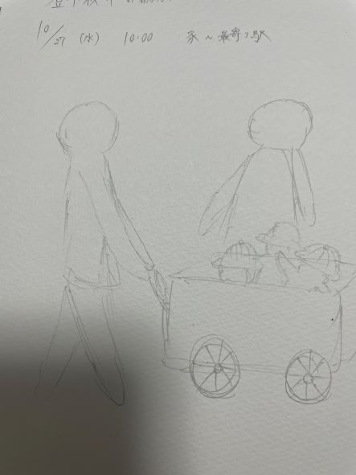
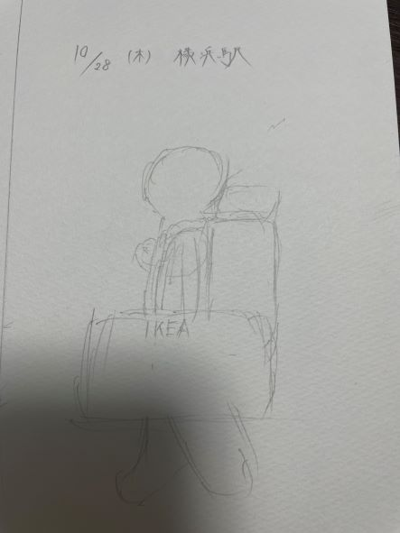
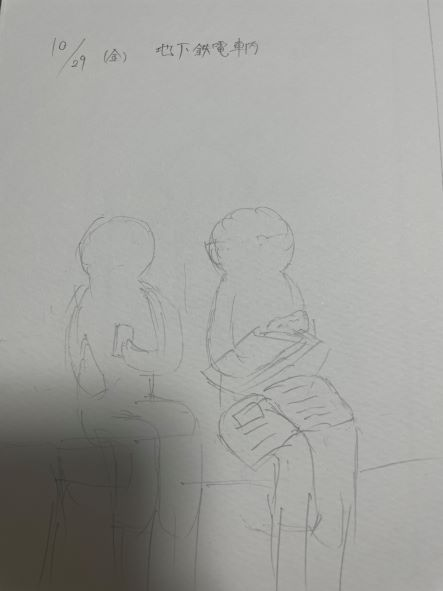

日常観察
10/27(水)

- 10月27日の登下校中の家から最寄り駅に行く途中の道の絵です。
- 近くに幼稚園があるため、幼稚園児が猫車の中に入って先生が押して散歩をしていた。
- 本来人を運ぶ物ではないが、楽しそうだった。
10/28(木)

- 横浜駅のホームにいた人。
- 背中に登山用のような大きいリュックを背負い、手にIKEAの大きい鞄を持っていた。
- １つに荷物をまとめようとすれば出来るのになぜしないのかと思った。
10/29(金)

- 登下校に利用している地下鉄にいた男子高校生。
- 膝に教科書を置き、手にバインダーのような物を用いてノートを取っていた。
- 大学受験の勉強なのか大変そう
XBPトップページ